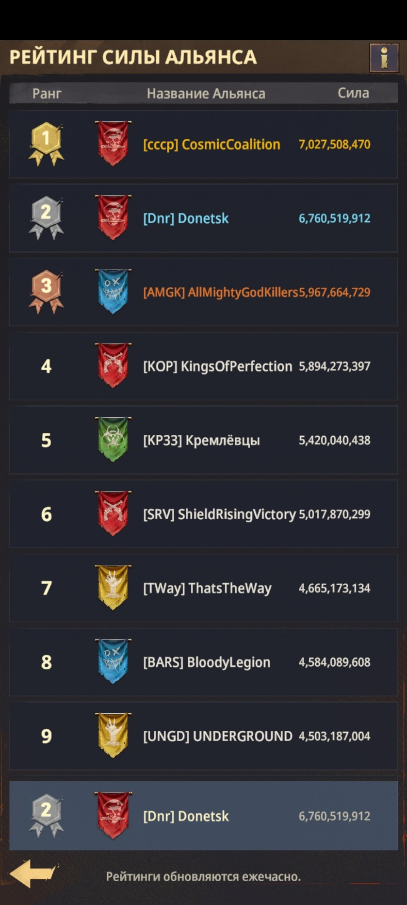

📖 Общее разъяснение
📖 ОБЩЕЕ РАЗЪЯСНЕНИЕ 📄 Страница 1 из 4 🏠 Альянс - это ваш игровой дом Место, куда вы приходите отдохнуть от суровых реалий жизни, где вместе со всеми развиваетесь, учитесь, совершаете ошибки и исправляете их. Здесь вы общаетесь, обсуждаете, смеётесь, радуетесь, находите новые знакомства и иногда прощаетесь со старыми друзьями - всё это ваш Альянс. ⚠️ Поэтому внимательно выбирайте Альянс, в котором хотите играть.

🏆 Рейтинг силы Альянса
📖 ОБЩЕЕ РАЗЪЯСНЕНИЕ 📄 Страница 2 из 4 📈 Почему Альянс так важен? Альянс и люди в нём очень сильно помогают развиваться в игре. Система построена так, что игроки-одиночки будут значительно отставать в развитии. 🤝 В хорошем Альянсе можно получить совет, поддержку и помощь в игровых вопросах, а также быстрее освоить важные механики.
📖 ОБЩЕЕ РАЗЪЯСНЕНИЕ 📄 Страница 3 из 4 🎯 События и награды В Альянсе вы участвуете во множестве разнообразных событий и получаете за них награды, которые ускоряют развитие. Командная игра помогает выполнять задания эффективнее и получать больше пользы от активности.
📖 ОБЩЕЕ РАЗЪЯСНЕНИЕ 📄 Страница 4 из 4 🎁 Другие преимущества Альянса: • сокращение времени строительства; • сокращение времени лечения раненых солдат; • исследования Альянса, ускоряющие развитие; • помощь 24/7 в игровых вопросах и сборах; • поддержка и прикрытие в субботних событиях - и не только. 🤝 Развивайтесь вместе, помогайте друг другу и выбирайте свой Альянс внимательно.